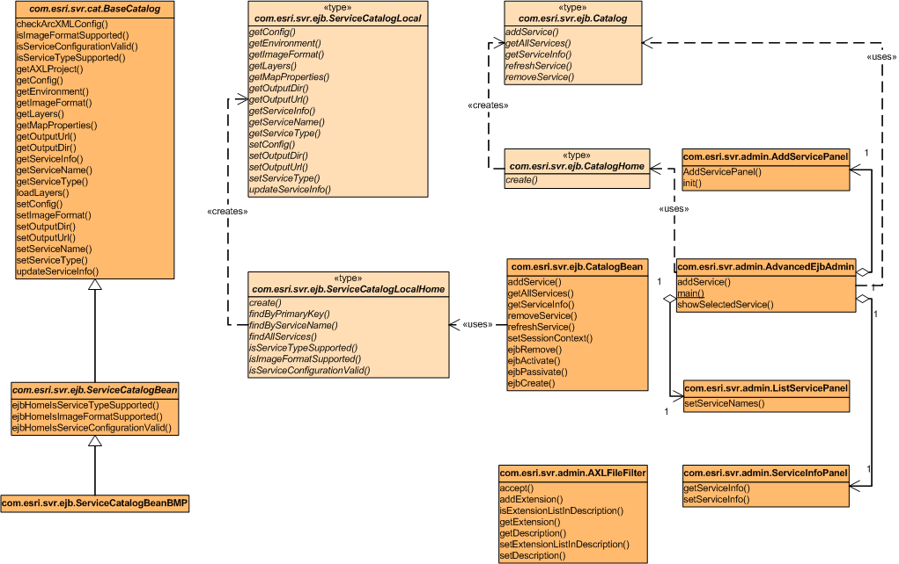

Administer services created by the AdvancedEJB sample. This package provides
functionality to search, add, remove, and update a map service of AdvancedEJB.
It provides a standalone application to fulfill those functionalities. AdvancedEJBAdmin is the main class, while the remaining three classes are developed
to provide three main functions: add a service, list all services, and show
service details (where two functions are enabling, removing, or updating the
service).
Class Diagram of the Package Interfaces and Classes (right column)

Click the diagram to see a printer friendly version.